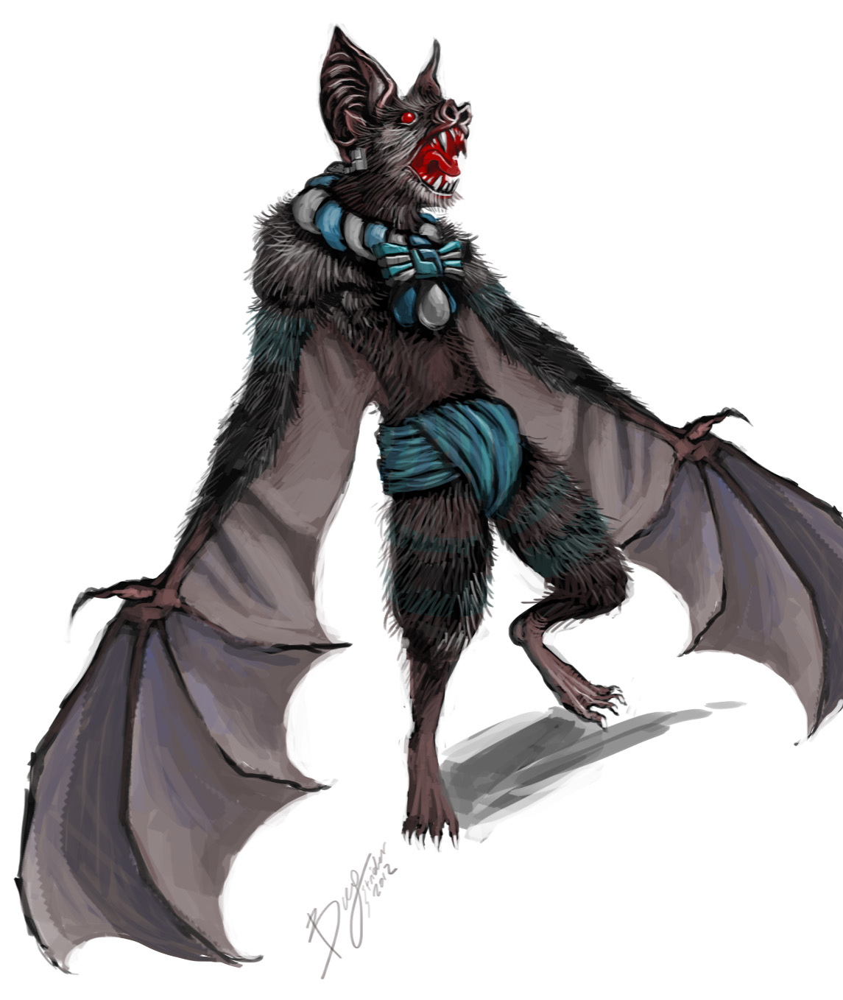
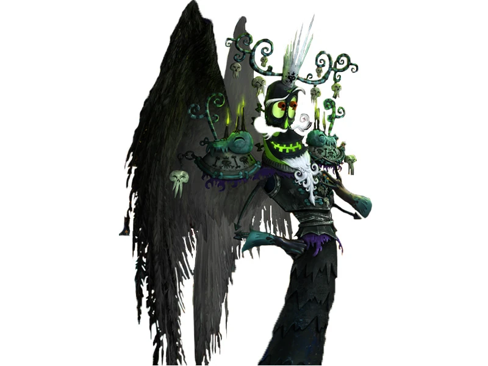

Mitologia Maia
Deuses, heróis e cosmovisão do mundo maia
A Criação do Mundo
O Popol Vuh, livro sagrado dos maias quichés, descreve várias tentativas dos deuses para criar seres capazes de adorá-los. A cosmogonia maia é complexa e envolve ciclos de criação e destruição.
Os Treze Céus e os Nove Mundos Inferiores
Os maias acreditavam em uma estrutura cósmica vertical com 13 camadas celestes (Oxlahuntikú) e 9 mundos subterrâneos (Bolon Ti Kú), com a Terra no meio. Cada nível era governado por deuses específicos e tinha seu próprio significado.
As Tentativas de Criação
Segundo o Popol Vuh, houve quatro tentativas de criação:
- Animais: Criados primeiro, mas não podiam falar para adorar os deuses
- Homens de barro: Dissolveram-se na água, sem força
- Homens de madeira: Rígidos e sem alma, foram destruídos por um dilúvio
- Homens de milho: Feitos da massa de milho amarelo e branco, perfeitos
Os deuses finalmente acertaram na quarta tentativa, criando os humanos atuais a partir do milho.
Os Povos do Milho
Os quatro homens de milho originais eram:
- Balam-Quitzé (Tigre com Doce Sorriso)
- Balam-Acab (Tigre da Noite)
- Mahucutah (O Renomeado)
- Iqui-Balam (Tigre da Lua)
Mais tarde, os deuses criaram quatro mulheres para completar a humanidade. Estes oito ancestrais se tornaram os progenitores dos maias quichés.
As Eras ou Sóis
Os maias acreditavam em ciclos de criação e destruição:
| Era | Elemento | Fim |
|---|---|---|
| Primeira | Terra | Destruída por jaguares |
| Segunda | Ar | Destruída por furacões |
| Terceira | Fogo | Destruída por chuvas de fogo |
| Quarta | Água | Destruída por dilúvio |
| Quinta (atual) | Movimento | Prevista para terminar por terremotos |
Cada era era governada por um deus diferente e terminava com uma catástrofe.
Deuses Principais
A mitologia maia apresenta um panteão complexo de deuses, muitos dos quais têm aspectos duais e múltiplas manifestações. Estes são os mais importantes:
HUN HUNALPÚ - O Deus do Milho
- Domínio: Milho, agricultura, vida
- Símbolos: Espiga de milho, cabeça de deus do milho
Representado como um jovem belo com cabeça alongada e cabelos como folhas de milho. Foi decapitado pelos senhores de Xibalbá (submundo), mas seus filhos gêmeos o vingaram. Seu ciclo de morte e renascimento simboliza o plantio e colheita do milho.
ITZAMNÁ - O Deus Criador
- Domínio: Criação, sabedoria, escrita
- Símbolos: Serpente, lagarto, símbolos celestes
Considerado o inventor da escrita e patrono das ciências. Era representado como um velho sem dentes e associado ao sol. Sua esposa era Ixchel, a deusa lua. Governava o dia e a noite.
KUKULKÁN (QUETZALCÓATL) - A Serpente Emplumada
- Domínio: Vento, aprendizado, civilização
- Símbolos: Serpente com penas de quetzal
Deus tolteca assimilado pelos maias. Seu templo em Chichén Itzá demonstra conhecimentos astronômicos avançados - durante os equinócios, uma sombra em forma de serpente desce a pirâmide.
IXCHEL - A Deusa Lua
- Domínio: Lua, fertilidade, tecelagem, medicina
- Símbolos: Coelho, jarro, tecido
Deusa de aspectos contraditórios - tanto da fertilidade quanto da destruição. Era representada como uma velha derramando um jarro de água (chuva) ou como uma jovem com coelho. Patrona das parteiras e curandeiras.
AH PUCH - O Deus da Morte
- Domínio: Morte, desastre, infortúnio
- Símbolos: Cadáver em decomposição, coruja, cão
Senhor de Mitnal, o nível mais baixo do submundo. Era representado com corpo em decomposição, adornado com sinos. Frequentemente associado ao deus da guerra e dos sacrifícios.
CHAC (CHAAC) - O Deus da Chuva
- Domínio: Chuva, relâmpagos, agricultura
- Símbolos: Machado, serpente, água
Um dos deuses mais venerados, especialmente pelos camponeses. Tinha quatro aspectos correspondentes aos pontos cardeais. Era invocado em rituais para trazer chuvas para as plantações.
HUN BATZ E HUN CHOUEN - Os Deuses Macacos
- Domínio: Artes, música, escrita
- Símbolos: Macaco, pincel, instrumentos musicais
Irmãos transformados em macacos pelos Heróis Gêmeos como punição por sua arrogância. Tornaram-se patronos das artes, especialmente da escrita e da música.
BOLON TZAKAB - O Deus da Linhagem
- Domínio: Realeza, linhagem, fogo
- Símbolos: Cetro de serpente, fogo
Associado ao poder real e à continuidade dinástica. Seu nome significa "Sangue-Nascido Muitas Vezes". Era invocado durante cerimônias de entronização.
EK CHUAH - O Deus do Comércio
- Domínio: Comércio, cacao, guerra
- Símbolos: Saco de mercadorias, cacao
Deus ambivalente - tanto patrono dos mercadores quanto deus da guerra. Era especialmente venerado pelos pochtecas (comerciantes profissionais).
IXTAB - A Deusa do Suicídio
- Domínio: Suicídio, paraíso
- Símbolos: Corda, laço
Representada como uma mulher enforcada com os olhos fechados e um laço no pescoço. Acreditava-se que os suicidas iam diretamente para um paraíso sob sua proteção.
YUM KAAX - O Deus da Natureza
- Domínio: Florestas, animais selvagens, agricultura
- Símbolos: Milho, plantas, animais
Senhor das florestas e dos animais. Era invocado pelos caçadores e agricultores. Representava a relação harmoniosa entre humanos e natureza.
VUCUB CAQUIX - O Falso Sol
- Domínio: Vaidade, arrogância
- Símbolos: Arara, jade, metais brilhantes
Um ser arrogante que se autoproclamou sol e lua antes da criação do verdadeiro sol. Foi derrotado pelos Heróis Gêmeos, que o humilharam tirando seus dentes de jade e olhos de prata.
Os Heróis Gêmeos
A história de Hunahpú e Ixbalanqué, os Heróis Gêmeos, é o mito central do Popol Vuh e representa o triunfo da ordem sobre o caos.
HUN AHPÚ E IXBALANQUÉ
Filhos de Hun Hunahpú e Ixquic, enfrentaram os senhores de Xibalbá para vingar seu pai e tio, que haviam sido derrotados anteriormente. Suas aventuras incluem:
- Derrotar Vucub Caquix, o falso sol
- Transformar seus meio-irmãos Hun Batz e Hun Chouen em macacos
- Passar por provas mortais em Xibalbá
- Derrotar os senhores do submundo através de astúcia
- Finalmente ascenderem como o sol e a lua
Seu mito simboliza o ciclo de morte e renascimento e a vitória da inteligência sobre a força bruta.
As Provas de Xibalbá
Os Heróis Gêmeos enfrentaram várias provas no submundo:
- Casa Escura: Venceram queimando tochas de pinhão
- Casa Fria: Sobreviveram ao frio extremo
- Casa dos Jaguares: Acalmaram os felinos com ossos
- Casa dos Morcegos: Hunahpú perdeu a cabeça para Camazotz
- Casa das Facas: Evitaram as lâminas afiadas
Em cada prova, usaram inteligência e magia para sobreviver.
Criaturas e Seres Mitológicos
A mitologia maia está repleta de seres fantásticos que habitam seus mitos e cosmovisão.
CAMAZOTZ - O Morcego da Morte
Demônio morcego que habitava Xibalbá. Decapitou Hunahpú durante uma das provas. Representava os perigos noturnos e o sacrifício.
- Nome significa "Morcego da Morte"
- Associado a cavernas e sacrifícios
- Possivelmente inspirado no morcego-vampiro
BACABS - Os Deuses Sustentadores
Quatro irmãos que sustentavam os céus nos pontos cardeais. Cada um era associado a uma cor e a um ano do ciclo calendárico.
- Kan: Leste, amarelo
- Muluc: Norte, branco
- Ix: Oeste, preto
- Cauac: Sul, vermelho
ALUXES - Os Espíritos da Natureza
Pequenos seres semelhantes a duendes que habitam florestas e campos. Podem ser benevolentes ou travessos, dependendo do tratamento recebido.
- Protegem as plantações se tratados com respeito
- Podem assustar pessoas que desrespeitam a natureza
- Ainda hoje parte do folclore maia contemporâneo
HUAY CHIVO - O Homem-Bode

Criatura híbrida entre humano e bode, associada à bruxaria e ao mal. Dizem ser bruxos que se transformam para causar danos.
- Olhos vermelhos que brilham no escuro
- Cheiro forte e desagradável
- Rouba animais e assusta viajantes noturnos
XIBALBA - O Submundo
Mais que um lugar, Xibalba era um ser vivo com suas próprias personalidades - os senhores da morte. Tinha seis casas de provas onde os mortos eram testados.
- Governado por Hun-Camé e Vucub-Camé
- Chegava-se através de um rio com águas negras
- Os senhores enganavam os mortos com falsas aparências
Outras Criaturas Notáveis
- Itzam-Ye: Ave mítica associada a Itzamná, possivelmente um quetzal ou arara
- Gucumatz: Versão quiché de Kukulkán, a serpente emplumada
- Zipacna: Criatura arrogante que carregava montanhas, morta pelos Heróis Gêmeos
- Cabrakan: O terremoto, irmão de Zipacna, também derrotado pelos gêmeos
- Xiquiripat e Cuchumaquic: Espíritos malignos que causavam doenças
Cosmovisão e Calendário
Os maias desenvolveram um sistema calendárico complexo que integrava mitologia, astronomia e vida cotidiana.
O Tzolk'in - Calendário Sagrado
Ciclo de 260 dias composto por 20 períodos de 13 dias (trezenas). Cada dia era governado por uma combinação de numeral e glifo:
- Usado para adivinhação e cerimônias religiosas
- Determinava nomes e destinos pessoais
- Cada trezena tinha seu próprio significado e influência
O Haab' - Calendário Civil
Ano solar de 365 dias dividido em 18 meses de 20 dias mais 5 dias "vazios" (Uayeb):
- Usado para agricultura e eventos cíclicos
- Os 5 dias de Uayeb eram considerados perigosos
- Nenhum dos dois calendários considerava anos bissextos
A Roda Calendárica
Combinação do Tzolk'in e Haab' que criava um ciclo de 52 anos (18.980 dias únicos). O fim deste ciclo era motivo de grandes cerimônias de renovação.
O Calendário de Conta Longa
Sistema linear que registrava o tempo desde a data mítica da criação (11 de agosto de 3114 a.C.). O famoso ciclo de 13 baktuns (cerca de 5.125 anos) que terminou em 2012 causou especulações sobre um suposto "fim do mundo".
Fatos Curiosos
O Jogo de Bola Sagrado
O pok-ta-pok não era apenas um esporte, mas um ritual religioso:
- Representava o movimento dos astros
- Por vezes incluía sacrifícios humanos
- Os marcadores eram cabeças de decapitados
- As quadras eram portais para o submundo
Sacrifícios e Auto-sacrifício
Os maias praticavam diversos rituais de oferenda:
- Auto-sacrifício com espinhos e cordas
- Sacrifícios de animais (perus, cães, jaguares)
- Sacrifícios humanos (geralmente prisioneiros de guerra)
- Oferendas de sangue real (língua, orelha, genitais)
A Árvore Ceiba Sagrada
A ceiba era considerada a árvore cósmica que conectava os mundos:
- Raízes no submundo (Xibalba)
- Tronco no mundo médio (Terra)
- Galhos no céu (Taan)
- Plantada no centro das cidades e aldeias
Os Livros Perdidos
Apenas quatro códices maias sobreviveram à conquista:
- Códice de Dresden: Astronomia e rituais
- Códice de Madrid: Astrologia e calendários
- Códice de Paris: Profecias e rituais
- Códice Grolier: Autenticidade disputada
O bispo Diego de Landa queimou centenas de livros em 1562.
Os Cães Guias
Os maias acreditavam que os cães guiavam as almas no submundo:
- Enterrados com seus donos
- Representados em cerâmica funerária
- Xoloitzcuintle (cão pelado mexicano) era especialmente valorizado
Os Senhores de Xibalba
Os deuses da morte tinham nomes sugestivos:
- Hun-Camé (Um Morte)
- Vucub-Camé (Sete Morte)
- Ahalpuh (Pus Demon)
- Ahalganá (Jaundice Demon)
- Chamiabac (Bone Staff)
- Chamiaholom (Skull Staff)
O Chocolate dos Deuses
O cacau tinha importância religiosa e econômica:
- Bebida dos deuses e da elite
- Moeda de troca
- Oferecido em cerimônias
- Associado a Ek Chuah, deus do comércio
As Profecias Maias
Contrário ao senso comum, os maias não previram o fim do mundo em 2012:
- 2012 marcou o fim de um ciclo de 13 baktuns
- Assemelhava-se à nossa virada de milênio
- Os maias previam ciclos além de 2012
- Nenhuma profecia catastrófica foi encontrada
O Popol Vuh
O "Livro da Comunidade" é nossa principal fonte:
- Escrito no século XVI por maias quichés
- Redigido em caracteres latinos
- Contém mitos de criação e história do povo quiché
- Original se perdeu, temos cópias do século XVIII
Principais Deuses Maias
| Nome | Domínio | Representação |
|---|---|---|
| Itzamná | Criação, sabedoria, calendário | Velho, serpente, lagarto |
| Hun Hunahpú | Milho, vida, agricultura | Jovem com cabeça de milho |
| Kukulkán | Vento, aprendizado, serpente | Serpente emplumada |
| Ixchel | Lua, fertilidade, tecelagem | Mulher com coelho ou jarro |
| Ah Puch | Morte, infortúnio | Cadáver com sinos |
| Chac | Chuva, agricultura | Homem com nariz alongado, machado |
| Hun Batz e Hun Chouen | Artes, música | Macacos |
| Bolon Tzakab | Linhagem real, fogo | Cetro de serpente |
| Ek Chuah | Comércio, cacao | Homem com saco de mercadorias |
| Ixtab | Suicídio | Mulher enforcada |
| Yum Kaax | Natureza, florestas | Jovem com plantas e animais |
As Eras Maias (Sóis)
| Era | Elemento | Duração | Fim |
|---|---|---|---|
| Primeiro Sol | Terra | ? | Jaguares devoraram a humanidade |
| Segundo Sol | Ar | ? | Furacões destruíram o mundo |
| Terceiro Sol | Fogo | ? | Chuvas de fogo e lava |
| Quarto Sol | Água | ? | Grande dilúvio |
| Quinto Sol | Movimento | 5125 anos (3114 a.C. - 2012 d.C.) | Previsto para terminar em terremotos |
Os Níveis do Cosmo Maia
| Nível | Nome | Descrição |
|---|---|---|
| 13 | Oxlahuntikú | Céu mais alto, morada de Hunab Ku |
| 12-7 | Taan | Céus intermediários com vários deuses |
| 6-1 | Yok'ol Kab | Camadas atmosféricas |
| 0 | Kab | Terra (mundo médio) |
| -1--9 | Xibalba | Submundo, 9 níveis de provas |